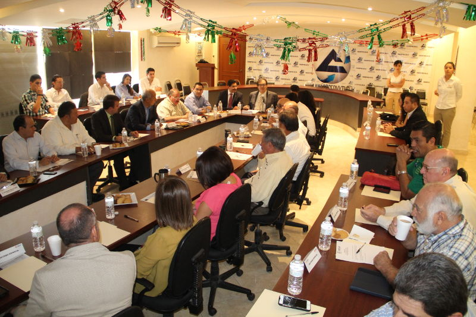
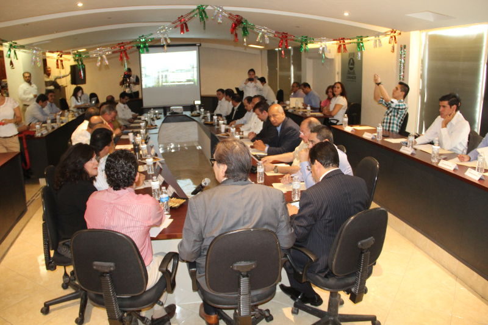

El día de hoy tuvo lugar la sexta sesión del Consejo del Instituto Municipal de Planeación y Competitividad (IMPLAN) de Torreón, en la cual realizaron la presentación del proyecto “Calle Completa”, promovido por la institución en coordinación estrecha con un grupo de laguneros de la zona norte de la ciudad.
El proyecto se denomina “+Q1 Calle”, mismo que está relacionado con los objetivos del Plan Estratégico Metropolitano y que surge debido a la preocupación de los ciudadanos ante el creciente desarrollo del norte de la localidad y los impactos negativos.
Eduardo Holguín, titular del organismo indicó que se trata de un modelo de vialidades integrales donde toman en cuenta todos los actores del espacio público: peatones, ciclistas, usuarios del transporte público y automovilistas; ya sean niños, adultos mayores o personas con discapacidad.
Destacó que el esquema se ubica a lo largo de la avenida María Montessori (Escuadrón 201) como eje principal con 5.4 kilómetros de recorrido, comenzando en el periférico Raúl López Sánchez hasta llegar al fraccionamiento Residencial Senderos.
Recalcó que enmarca la normatividad vigente municipal, estatal y nacional y como ejemplo explicó que uno de las prioridades del Plan Nacional de Desarrollo Urbano es promover el mantenimiento y modernización de la infraestructura vial y de transporte bajo criterios de calle completa, seguridad y eficacia.
“El siguiente paso es la socialización del plan donde generaremos retroalimentación e intercambio de ideas y opiniones entre los involucrados: habitantes de la zona, propietarios, desarrolladores y direcciones de la administración municipal”.
De acuerdo a estadísticas del IMPLAN, en la zona metropolitana de La Laguna, el 49 por ciento de los viajes en un día son realizados en automóvil particular, 30 por ciento en transporte público, 19 por ciento a pie y solo dos en bicicleta; contrario a lo recomendado por las políticas de movilidad sustentable.
Torreón, Ciudad que Vence.
Fotografías

